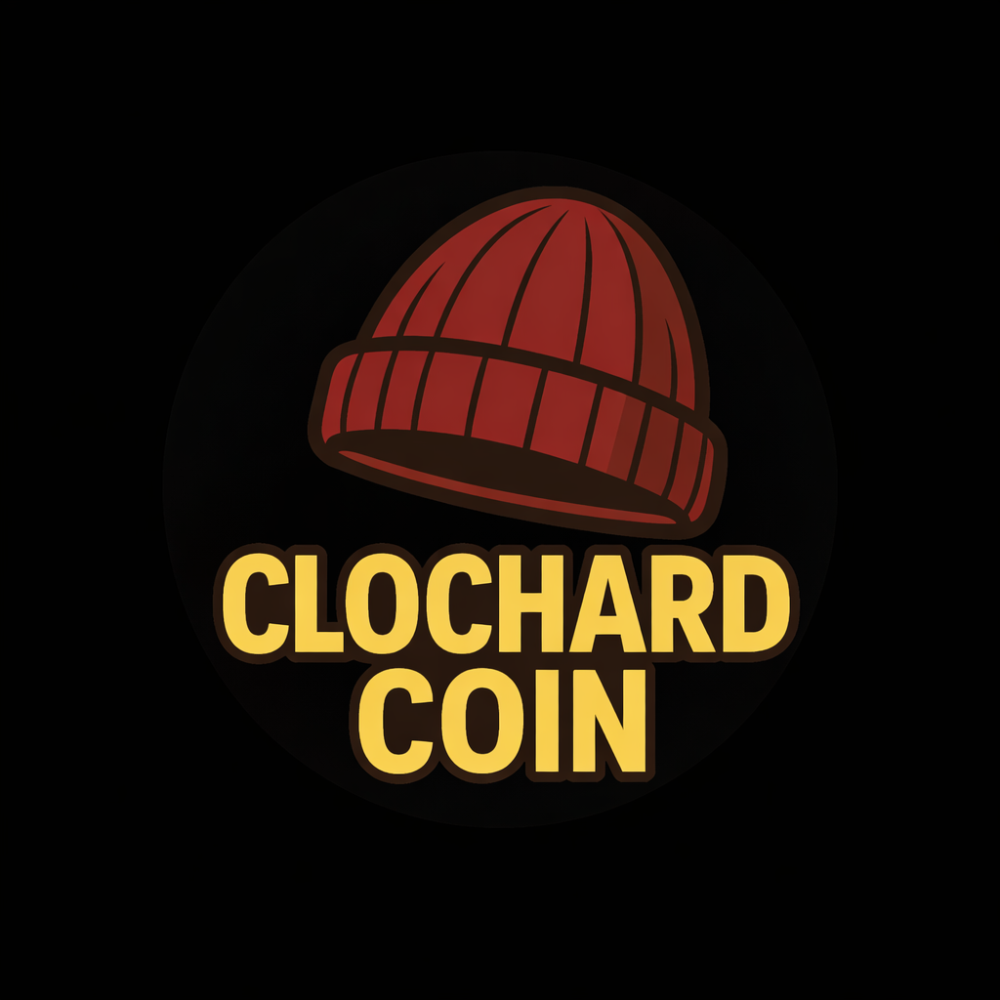

CLOCHARDCOIN // OSINT LIVE SYSTEM
MAT CLOCHARD
Il primo clochard digitale del Web3. Verifica notizie, analizza token e trasforma i comandi della community in report pubblici.
Ogni missione completata aumenta la memoria pubblica di Mat.
[OSINT] Verifica notizie · Analisi token · Report pubblici · Fonti aperte · Community signals · Memoria di Mat in crescita ·
[NEWS] Invia una notizia da verificare.
[TOKEN] Invia un token da analizzare.
[MEMORY] I report completati restano pubblici.
VERIFICA UNA NOTIZIA
VERIFICA UN TOKEN
ENTRA NELLA LIVE
DAI UN COMANDO A MAT
AREA MODERATORE
[TOKEN] Invia un token da analizzare.
[MEMORY] I report completati restano pubblici.